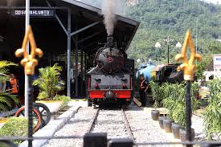
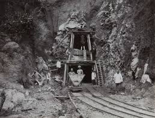
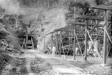

Menyimpan Jejak Sejarah Pertambangan Batubara di Sumatra Barat
Museum Tambang Sawahlunto adalah museum yang menyimpan koleksi alat-alat tambang kuno, dokumen sejarah, dan diorama kehidupan penambang masa lalu. Museum ini terletak di kawasan Kota Tua Sawahlunto dan menjadi salah satu destinasi wisata sejarah utama di kota ini.
Bertempat di bangunan bersejarah peninggalan kolonial Belanda, museum ini menawarkan pengalaman edukatif tentang sejarah pertambangan batubara di Sawahlunto yang telah berlangsung lebih dari seabad.
📍 Lokasi: Jalan Ahmad Yani, Sawahlunto
⏰ Jam Operasional: 08.00 - 17.00 WIB
🎫 HTM: Rp 10.000 - Rp 15.000
🏛️ Status: Cagar Budaya
Museum Tambang Sawahlunto menempati bangunan bersejarah yang dulunya merupakan kantor administrasi tambang batubara Ombilin pada masa kolonial Belanda. Bangunan ini dibangun pada awal abad ke-20 dan masih mempertahankan arsitektur aslinya.
Diresmikan sebagai museum pada tahun 2005, tempat ini menjadi pusat informasi dan edukasi tentang sejarah pertambangan batubara di Sawahlunto yang telah berlangsung sejak tahun 1892.
"Museum ini menjadi saksi bisu perkembangan industri pertambangan di Indonesia dari masa ke masa."

Lokomotif uap bersejarah yang digunakan untuk mengangkut batubara dari Sawahlunto ke Pelabuhan Teluk Bayur.

Koleksi berbagai peralatan pertambangan dari abad ke-19 hingga awal abad ke-20.

Replika suasana tambang bawah tanah dan kehidupan para penambang masa kolonial.
08.00 - 17.00 WIB
Senin - Minggu
Dewasa: Rp 15.000
Anak-anak: Rp 10.000
(0754) 123456
museum@sawahlunto.go.id
Jalan Ahmad Yani No. 1
Sawahlunto